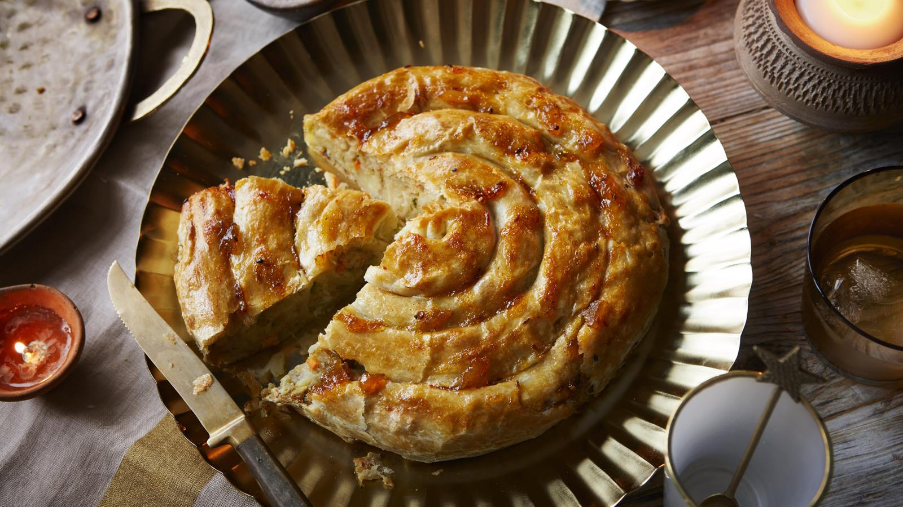

Samosa swirl

All the flavours of a potato and vegetable samosa in a pretty swirl. Not only does this look and taste beautiful, but it uses puff pastry, which means you can have all the flavours of Indian samosas without having to deep-fry a thing. A real crowd-pleaser for Diwali parties!
Ingredients
- 350g/12oz floury potatoes, such as Maris Piper, skins left on and well scrubbed
- 100g/3½oz frozen mixed vegetables, defrosted
- 2 tbsp neutral oil, such as sunflower or rapeseed
- 1 small onion, finely chopped
- 2 tsp minced or finely grated fresh root ginger
- 1 hot green chilli, finely chopped
- 2 tsp garam masala
- ¾ tsp salt
- 1 tsp lemon juice
- 1 tbsp roughly chopped fresh coriander
- 320g/11½oz ready-rolled puff pastry, chilled
- 3 tbsp full-fat milk
- 1 tbsp mango chutney
Method